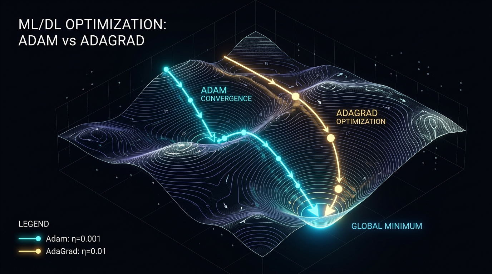
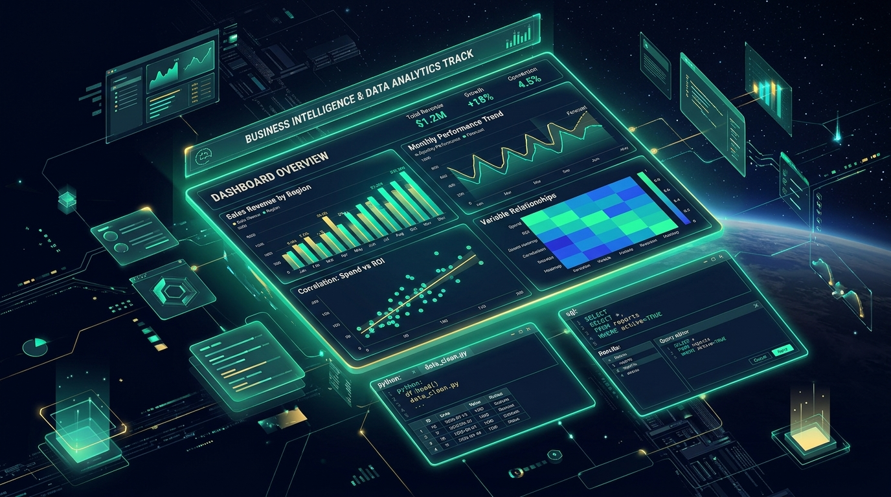
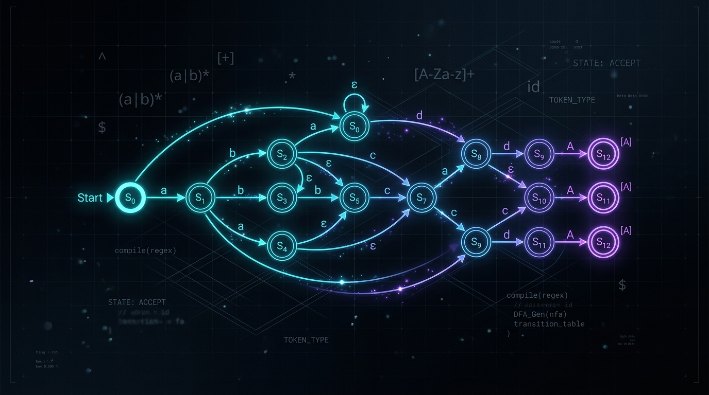
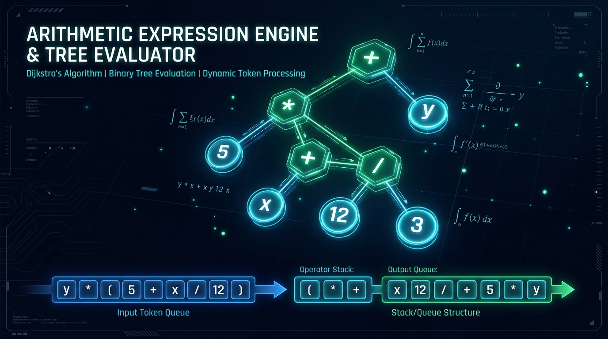

Engineering Intelligent AI Systems & Deep Neural Networks.
Third-year Computer Science student at Faculty of Science, Alexandria University (GPA 3.22), specializing in AI Engineering. Focused on Deep Learning & Neural Networks with TensorFlow & Keras, Natural Language Processing (NLP), and implementing mathematical optimizers from first principles (custom Adam & AdaGrad from scratch). Trained with the Microsoft-affiliated Digital Egypt Pioneers Initiative (DEPI) with solid foundations in algorithms and computational theory.
Mohamed Abd El Aziz
AI Engineer
Deep Learning, Mathematical AI & Software Systems
Computer Science student at Faculty of Science, Alexandria University, engineering AI solutions from theoretical foundations to production.
I am a third-year Computer Science student at the Faculty of Science, Alexandria University, specializing in AI Engineering. Currently, I am advancing as a Machine Learning Engineer Trainee through the Microsoft-affiliated Digital Egypt Pioneers Initiative (DEPI).
My expertise spans Deep Learning & Neural Networks using TensorFlow and Keras, alongside Natural Language Processing (NLP). Beyond utilizing high-level abstractions, I build algorithms from mathematical first principles — having implemented the Adam and AdaGrad gradient descent optimizers completely from scratch with pure NumPy.
What sets me apart is the rare fusion of mathematical AI depth with robust software engineering foundations: from compiler and automata theory (Regex-to-NFA-to-DFA engines) and data structures (expression trees & custom hash tables) to enterprise JavaFX core banking architectures and modern software platforms.
Neural network architectures, sequence modeling, embeddings, and text classification with TensorFlow & Keras.
Deriving Adam & AdaGrad optimizers, loss surface dynamics, and vectorized matrix math from scratch with NumPy.
Automata & compiler theory, Dijkstra's parsing, enterprise JavaFX design patterns, and ACID database persistence.
Languages
Alexandria University
Bachelor in Computer Science, Faculty of Science
2024 – Present (Expected 2028) • GPA: 3.22
Skills & Technologies
Practical tools and frameworks leveraged across artificial intelligence, deep learning, NLP, and software systems.
Multi-layer Perceptrons, Convolutional Neural Networks, loss function optimization, backpropagation mechanics, and hyperparameter tuning.
Text tokenization, sequence processing, TF-IDF representations, word embeddings, sentiment classification, and semantic pipelines.
Mathematical implementation of Adam and AdaGrad gradient descent algorithms from pure NumPy — loss surfaces, learning rates, and momentum.
Systematic prompt engineering, few-shot conditioning, structured JSON output extraction, context chaining, and OpenAI/Gemini API integration.
Predictive classification, regression (Linear, Ridge, Lasso, ElasticNet), Random Forests, SVM, and K-Means clustering with rigorous benchmarks.
Handling missing data, outlier detection, numerical scaling (StandardScaler/MinMax), categorical encoding, and feature correlation selection.
Quantifying model generalization: ROC-AUC curves, Precision-Recall tradeoffs, F1-scores, Confusion Matrices, and residual analysis.
High-performance multi-dimensional array operations, vectorized linear algebra calculations, broadcasting, and matrix math.
Statistical graphics, correlation heatmaps, feature distribution skewness plots, pairplots, and optimizer loss trajectory plots.
Thompson's Construction (Regex to NFA with ε-transitions), Subset Construction (NFA to DFA via ε-closure), and state machine simulation.
Shunting-yard Infix-to-Postfix algorithm, Binary Expression Trees with 4 traversals, and custom Hash Tables with Double Hashing.
Enterprise desktop banking applications, polymorphic OOP design, DAO pattern, JDBC database integration, and ACID transactions.
RESTful API design, asynchronous event-driven architectures, JWT authentication, bcrypt password hashing, React, and glassmorphism styling.
Source code version control, collaborative workflows, Jupyter Notebooks, Google Colab, NetBeans IDE, and PowerShell/Linux terminal automation.
Featured Projects
Real-world AI systems, first-principles mathematical implementations, compiler automata engines, and enterprise platforms.

Deep Learning from ScratchMathematical implementation of Adam and AdaGrad gradient descent optimization algorithms written in pure NumPy without PyTorch or TensorFlow. Includes convergence experiments, learning rate comparisons, and loss surface visualizations.

Predictive Data ScienceEnd-to-end data science and regression pipeline featuring deep exploratory data analysis (EDA), feature engineering, missing value imputation, outlier handling, and cross-validated predictive regression modeling (Ridge, Lasso, Random Forest).

Theory of ComputationTheoretical computer science engine implementing Thompson's Construction (Regex to NFA with ε-transitions), Subset Construction (NFA to DFA via ε-closure), interactive string simulation, ASCII transition tables, and Mermaid state diagram export.
Enterprise JavaFX core banking desktop application with polymorphic savings and current accounts, overdraft facilities, atomic inter-account fund transfers, audited transaction ledger, and a resilient dual-engine persistence layer (Oracle XE + embedded fallback).

Data Structures & AlgorithmsComputer science data structures pipeline: Lexical Tokenizer → Dijkstra's Shunting-yard Infix-to-Postfix algorithm → Binary Expression Tree evaluator with 4 traversals → Hash Table storage with Double Hashing and Separate Chaining.
A modern career platform designed to help learners master in-demand technology fields through 12 comprehensive career tracks (108 phases), interactive roadmaps, OTP email verification, secure password reset, and an admin management dashboard.
Modern financial market analysis web application engineered with TypeScript and React. Features interactive asset trend analytics, dynamic technical indicator charts, responsive state handling, and sleek dark-mode glassmorphic interface.
Transparent Pricing for High-Impact AI & Software
Modern tier options structured for fast iteration and dependable delivery — from deep exploratory data insights to predictive machine learning pipelines and custom deep learning solutions.
EDA & Data Intelligence
Transform raw, messy data into clean, statistically verified datasets with publication-grade visualizations and clear actionable takeaways.
- In-depth Exploratory Data Analysis (EDA)
- Outlier detection, anomalies & imputation
- Clean, structured exports (CSV / Parquet / SQL)
- Statistical distributions & feature correlations
- Visual graphs (Matplotlib & Seaborn)
- Actionable executive insights summary
- Documented, reproducible Jupyter Notebook
Predictive ML & Pipelines
Supervised and unsupervised machine learning models engineered for high accuracy, low generalization error, and automated decisions.
- End-to-end Feature Engineering & Scaling
- Predictive Algorithms (Classification & Regression)
- Hyperparameter Tuning (GridSearchCV / Random)
- K-Fold Cross-Validation to eliminate overfitting
- Benchmarking: ROC-AUC, F1-Score, Confusion Matrix
- Exported Serialized Model Pipeline (.joblib / .pkl)
- Prompt Engineering & LLM APIs (OpenAI / Chat)
- 2 Iterative review cycles + 1-on-1 code walkthrough
Deep Learning & Custom AI
Advanced neural network design, custom deep learning architectures with TensorFlow & Keras, sequential NLP pipelines, and production inference serving.
- Custom Neural Network Design (TensorFlow & Keras)
- Natural Language Processing (NLP) & Sequence Modeling
- Mathematical Optimization & Custom Loss Function Tuning
- Word Embeddings, Tokenization & Text Feature Extraction
- High-Throughput RESTful Model Inference APIs
- Advanced Prompt Engineering with Context Chaining
- Docker Containerization & Cloud Deployment Setup
- 30-Day Post-Launch Maintenance & Performance Tuning
Have a Specialized Enterprise Scope or Need Ongoing Fractional AI Support?
From bespoke deep learning research to custom SaaS backend architectures or academic collaborations, I provide tailored scopes with defined milestones.
Experience & Education
Structured training in machine learning engineering alongside academic foundations in Computer Science.
Machine Learning Engineer Trainee
- Undergoing an intensive, industry-aligned track covering the applied machine learning engineering lifecycle, from data preparation through model development and evaluation.
- Working within Microsoft's learning framework and tooling to build practical, job-ready ML engineering skills.
- Applying structured projects and disciplined time management to consistently deliver completed, working exercises and assignments on schedule.
Bachelor in Computer Science
- Specializing in Artificial Intelligence and Machine Learning with core foundations in Data Structures, Algorithms, Database Management, and OOP.
- Consistent academic standing with 3.22 GPA, combining theoretical mathematics with hands-on software development.
- Collaborating on academic and departmental software projects adhering to strict deadlines and high engineering standards.
Certifications & Accreditations
Industry-recognized professional certificates validating specialized knowledge in AI & Machine Learning.
Machine Learning with Python
20 hours intensive training covering supervised/unsupervised algorithms, regression, classification, clustering, and Scikit-Learn pipelines.
IBM • via CourseraAI Engineering Professional Certificate
Comprehensive professional track focusing on deep learning fundamentals, neural network architectures, and applied AI systems.
IBM (Current) • via CourseraApplied Machine Learning Track
End-to-end ML lifecycle, data wrangling, model evaluation, and Microsoft-aligned technical practices.
DEPI & Microsoft AffiliationOracle AI Foundation Badge 2026
Foundational accreditation in modern artificial intelligence, machine learning concepts, cloud AI services, and enterprise AI architectures.
Oracle • 2026 Verified CredentialChatGPT Prompt Engineering for Developers
Principles of prompt engineering for developer applications, iterative prompt development, text summarization, inferring sentiment, transformation, and expanding with LLMs.
Andrew Ng & Isa Fulford • DeepLearning.AI & OpenAIRecognized for Team Leadership & Technical Delivery
Authentic feedback from university capstone peers, project teammates, and training colleagues highlighting architectural rigor, milestone execution, and leadership under pressure.
"Mohamed served as our lead architect and team coordinator for our major software engineering capstone project at Alexandria University. When we faced severe deadline constraints and complex database-to-UI sync issues, Mohamed stepped up with a calm, structured plan. He broke the project into structured daily sprints, resolved the toughest architectural roadblocks himself, and kept all five of us motivated and synchronized. We delivered a complete, polished software suite ahead of deadline. He is a natural engineering leader who excels under pressure."
"Collaborating with Mohamed during the intensive Microsoft-affiliated DEPI program has been thoroughly impressive. His grasp of statistical machine learning, Scikit-Learn pipelines, and model evaluation metrics is top-tier. Whenever our study cohort encountered complex tuning issues or data preprocessing edge cases, Mohamed was always ready to unblock teammates with clear, patient explanations and robust code."
"Reviewing Mohamed's DevPath platform architecture demonstrated his solid software engineering foundations. He built a high-performance Node.js/Express REST backend, robust JWT token validation with OTP verification, and integrated 12 comprehensive track curriculums with seamless admin management. His code structure is clean, modular, and built with production discipline in mind."
"In our Bank Management System project, Mohamed led the enterprise architecture implementation using JavaEE and JavaFX. He strictly enforced the DAO pattern and engineered robust ACID database transaction rollbacks to prevent fund transfer concurrency anomalies. His attention to operational reliability, edge cases, and role-based access control was far beyond what you typically see at the undergraduate level. A truly disciplined engineer."
Ready to Build Next-Generation AI & Scalable Software?
Looking for an AI engineer who combines rigorous mathematical machine learning foundations with deep learning, NLP, and solid software architecture? Let's connect to discuss how I can bring immediate value to your engineering team or upcoming product.
Let's Build Something Exceptional
I am currently Open to Work and actively interviewing for AI/ML Engineering, Data Science, and Software Development positions. Feel free to reach out directly.